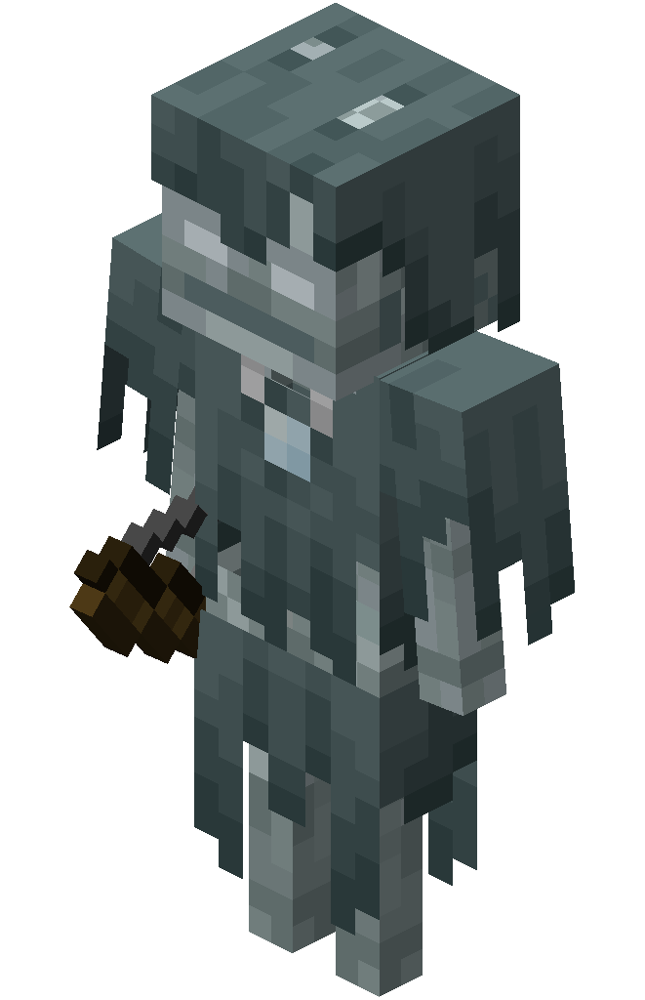

The Frostbound Huntsman
Snowy Tundra Boss

| Type | Stray |
|---|---|
| HP | 25 |
| Attack | 5 |
| Defense | 2 |
| Range | 4 |
| Speed | 2 |
| Size | 2 × 2 |
| Phase 2 | ≤ 50% HP |
| Dimension | Overworld |
The Frostbound Huntsman
Snowy Tundra biome boss — a spectral archer whose freezing bolts and icy traps make escape all but impossible.
The Frostbound Huntsman is a cursed Stray archer that has internalized the endless winter of the tundra, reshaping its attacks into walls of ice and freezing storms. It prefers a measured approach, trapping prey in place before picking it apart from range.
Abilities
- Blizzard: Unleashes a 3 × 3 AoE centered on the player, dealing 3 damage and applying Slowness for 2 turns.
- Ice Wall: Raises a 3-tile obstacle wall perpendicular between itself and the player, lasting 3 turns. Blocks both movement and line of sight.
- Glacial Trap: Places a 2 × 2 freeze zone at the player’s current position — stuns for 1 turn at the start of the player’s next turn if still standing in it.
- Frost Arrow: Ranged attack at up to 4 tiles dealing ATK damage and applying 1-turn Slowness.
Phase 2 — “Permafrost”
Triggers at ≤ 50% HP. Gains Speed 3. Two random arena tiles freeze every 2 turns. Blizzard’s center tile now stuns in addition to applying Slowness.
Strategy
Destroy Ice Walls to maintain movement lines and keep pressure on. Avoid the Glacial Trap or you will be stunned at point-blank with no escape.